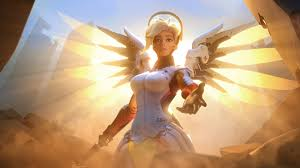
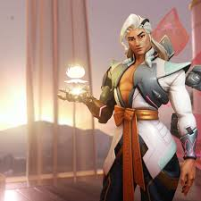
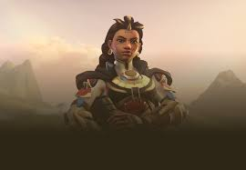
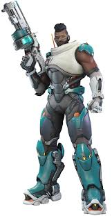
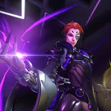
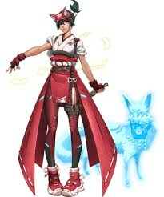
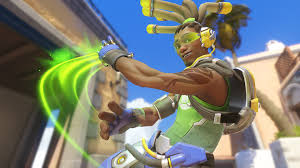
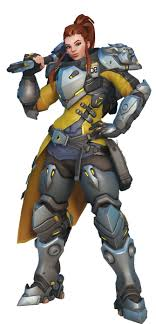
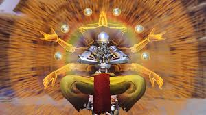
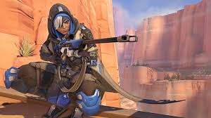

The healer catagory consists of 10 heroes those being mercy, lifeweaver, illari, baptiste, moira, kiriko, lucio, brigitte, zenyatta, and ana

Mercy is a german doctor that joined overwatch as a healer after being recruited by winston. she fights using her pistol and can heal her allies or buff their attacks with her staff.

Lifeweaver is a british man that uses his petals to heal his allies and can also fire them as a projectile weapon, he can also use the flower on his back as a platform, and can pull his allies towards him. Little is known about him.

Allari is a inti warrior that also studied Ana. Her set includes a semiauto gun that can also shoot a healing beam at her allies, a healing pylon, she can launch herself with a blast, and she can shoot a suncharge onto her enemies that explode after a certain amount of damage.

Baptiste is a former war medic that uses his biotic grenades and immortality field to try to stop others from dying while shooting enemies with his burst fire gun.

Moira is a scientist that went rouge and joined talon after finding out how to change the cell structer for good and for bad causing her to be able to heal and damage others using beams fired from her hands using the pack containing the liquids on her back, she is also able to fire them as a focused orb, and use a dash.

Kiriko is a woman trained by the shimada that uses the powers of the fox yokai to heal, clense, and hasten the speed of others and herself, she also is able to teleport to allies with this and uses kunai knives to fight. She joined to assist genji and hanzo due to training with them from a young age.

Lucio is a dj and the son of Benicio, who founded vishkars sonic technology. he uses a sound based weapon made by vishkars to be able to shoot sonic waves, launch enemies, heal/speed boost allies, and create a sonic barrier using this gun, he is also able to wall ride with his skates that are also made by vishkars.

Brigitte is the daughter of Torbjorn and is a close friend to Reinhardt. She fights using a flail, a sheild, and a throwable healing item, that hardly even heals.

Zenyatta is an omnic monk that joined overwatch in order to stop others from dying and eventually restore "tranquility" in others. He fights by throwing his orbs at others, placing an orb of discord on others to cause them to take more damage, an orb of harmony to heal allies, and is able to enter a state of true peace causing him to become temporarely immortal while healing allies in an area.

Ana is a war medic that is also an ex-member of talon that left to join overwatch after seeing what they were truly doing. she uses her sniper to shoot syringes that heal allies and damage enemies, uses a pistol that injects an enemy with a syringe that causes them to fall asleep, a biotic grenade that can heal allies and stop enemies from healing, and a nano boost that can boost the damage of a ally.